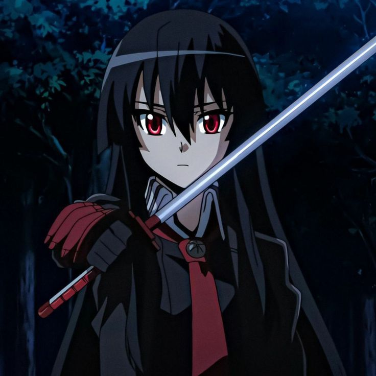
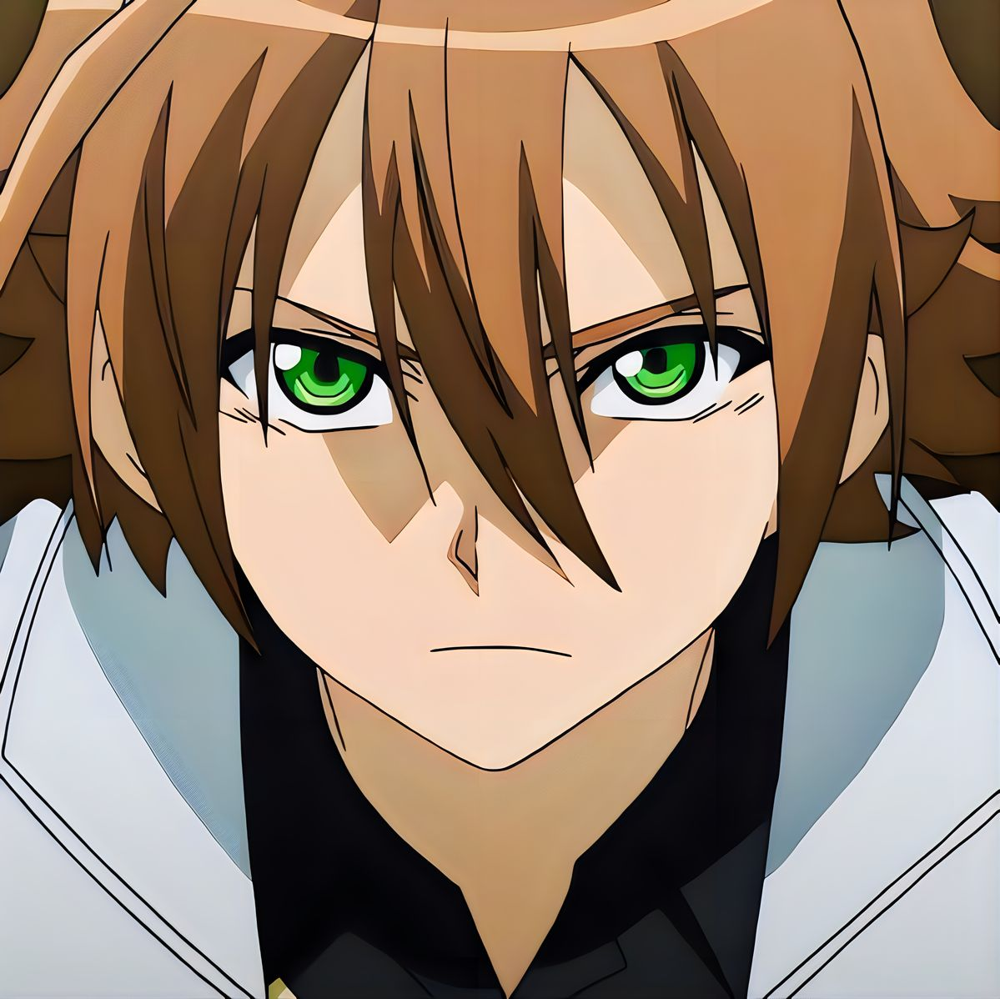
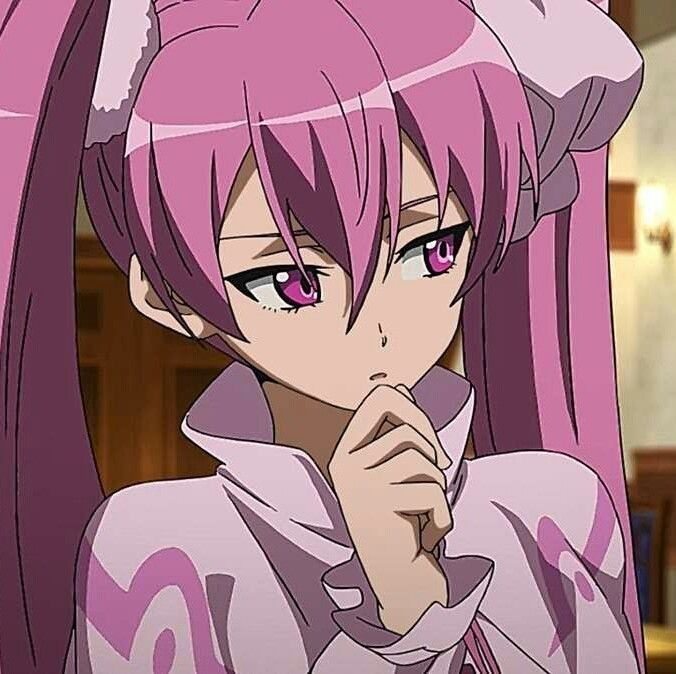
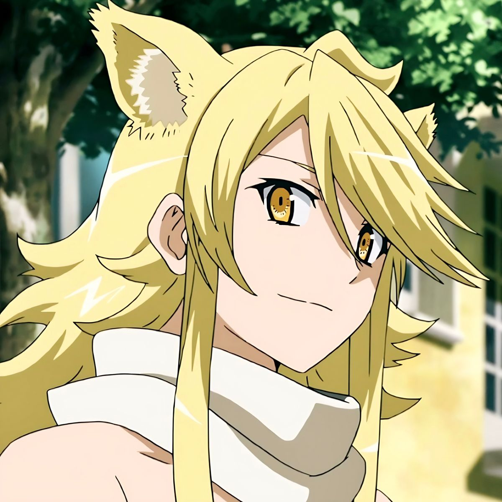
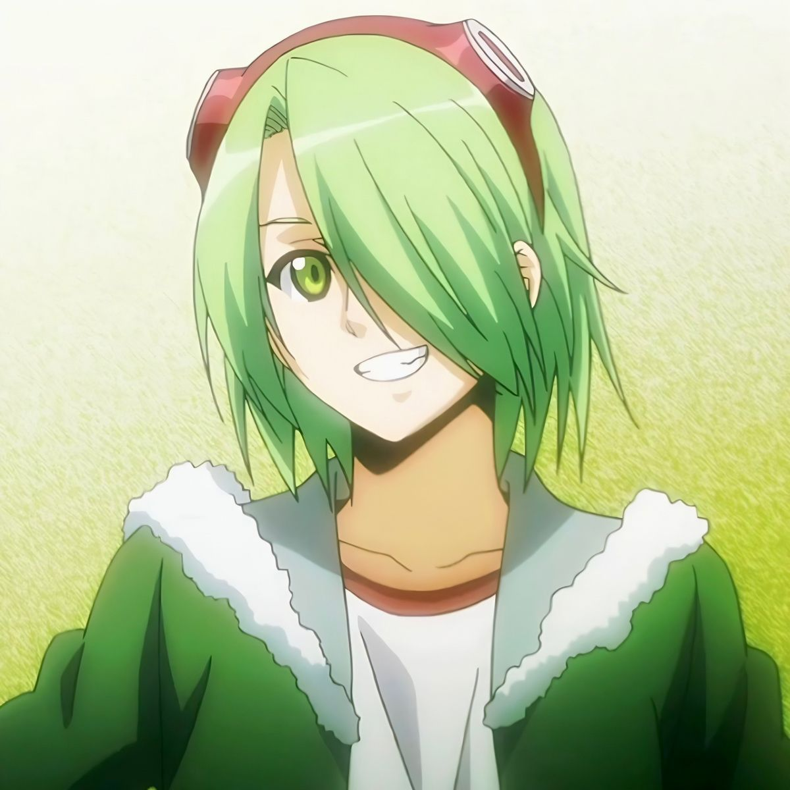
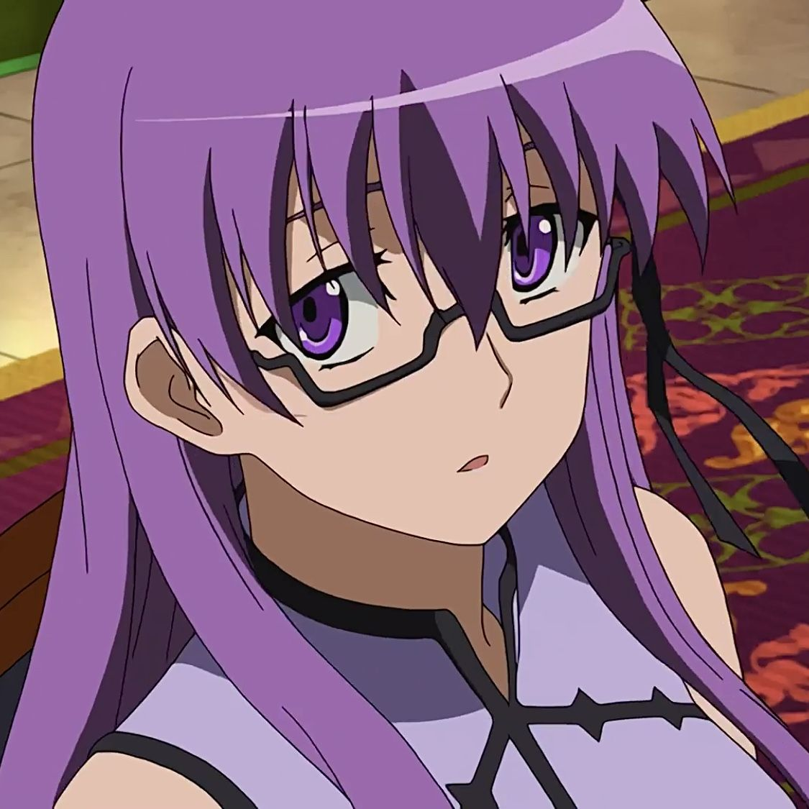
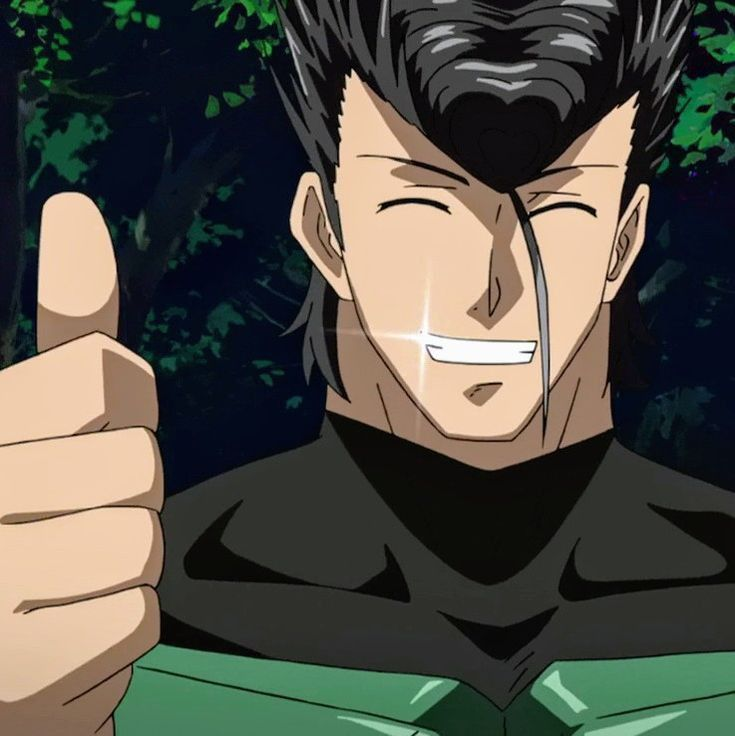
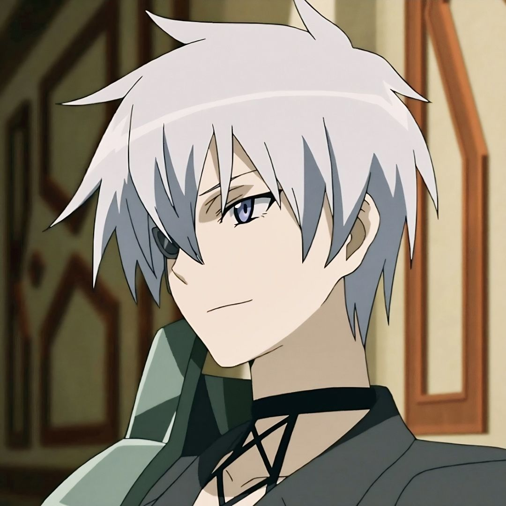
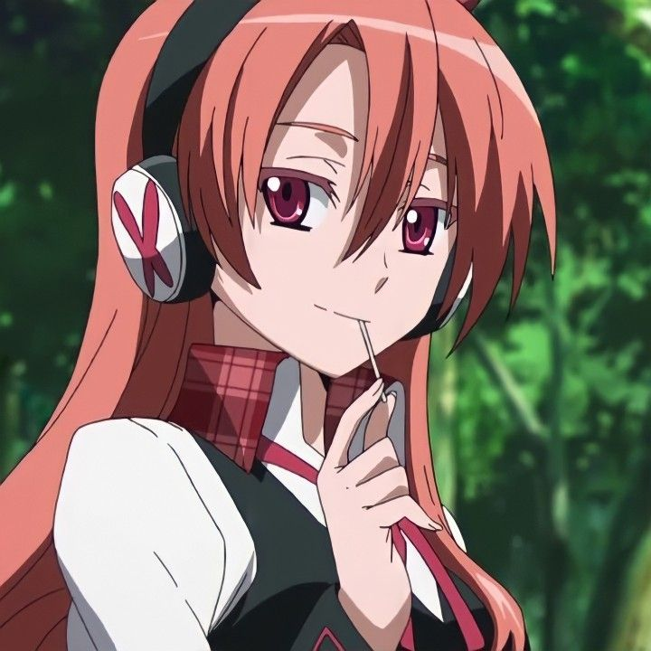
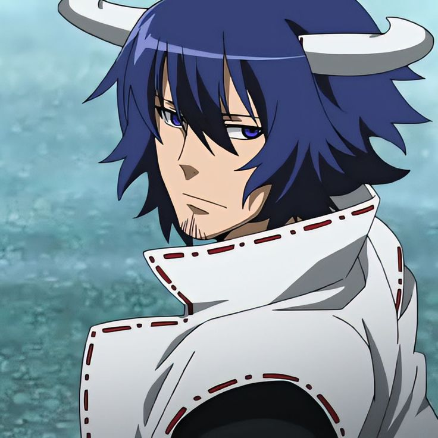

Akame
Arma: Murasame
Assassina de elite criada e treinada pelo Império desde pequena. Extremamente fria e eficiente em batalha, mas com um coração dedicado aos seus companheiros. Sua espada Murasame mata com um único corte, injetando um veneno incurável na vítima.

Tatsumi
Arma: Incursio
Jovem do interior que veio para a Capital em busca de riqueza para salvar sua aldeia. Após descobrir a corrupção do sistema imperial, se une a Night Raid e evolui de guerreiro iniciante para um dos combatentes mais poderosos do grupo.

Mine
Arma: Pumpkin
Franco-atiradora de personalidade forte e orgulhosa. Esconde um coração gentil por trás da arrogância. Seu rifle Pumpkin se torna progressivamente mais poderoso quanto maior o perigo que ela enfrenta, o que significa que ela brilha mais quando as chances estão contra ela.

Leone
Arma: Lionelle
Extrovertida, espontânea e ferozmente leal. Frequentemente age como a figura de mentora de Tatsumi. Sua arma Lionelle a transforma em uma forma leonina com força e regeneração sobre-humanas, tornando-a quase impossível de morrer em batalha.

Lubbock
Arma: Cross Tail
Especialista em armadilhas e reconhecimento. Usa fios de aço invisíveis para criar redes letais ao redor de seus inimigos. Apesar da fachada descontraída e seu interesse na líder Najenda, é um dos membros mais dedicados e estratégicos do time.

Sheele
Arma: Extase
Possui uma aparência gentil e personalidade levemente desastrada no dia a dia, mas impecavelmente eficiente em combate. Empunha as tesouras gigantes Extase, capazes de cortar qualquer material. Possui um talento natural para lutar que contrasta com seu temperamento doce.

Bulat
Arma: Incursio
Antigo soldado do exército imperial que abandonou tudo ao descobrir a corrupção do sistema. Mentor de Tatsumi e um dos guerreiros mais respeitados da Night Raid. Empunhava a armadura Incursio antes de passá-la adiante, demonstrando uma força e nobreza raras.

Najenda
Arma: Susanoo
Líder da Night Raid e ex-general do Exército Imperial. Perdeu um braço e um olho em batalha. Estrategista fria e calculista, carrega o peso de mandar seus companheiros para missões das quais podem não retornar.

Chelsea
Arma: Gaea Foundation
Especialista em disfarces e infiltração. Sua arma Gaea Foundation permite que ela transforme sua aparência física para se passar por qualquer pessoa. Cínica e direta, frequentemente questiona as decisões dos outros membros, mas prova ser uma aliada indispensável em missões de reconhecimento.

Susanoo
Arma: ---
Criado para ser uma arma imperial, Susanoo assume forma humana e atua como combatente e suporte. Extremamente leal e disciplinado, possui grande força e resistência, além de adaptar suas habilidades conforme a batalha, tornando-se um aliado essencial da Night Raid.